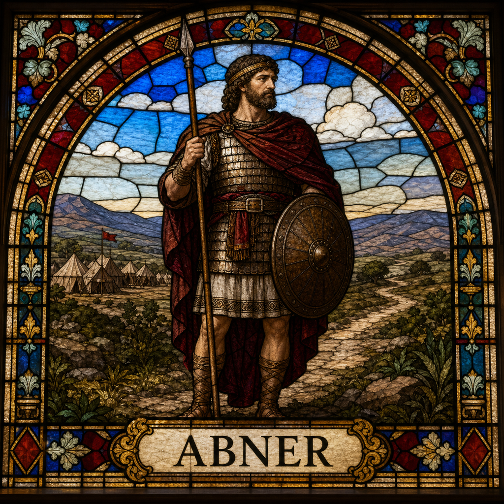

Abner (M)
First named in 1 Samuel 14:50-51
Abner, Saul's cousin, commanded Saul's army throughout his reign (1 Samuel 14:50-51). After Saul's death, Abner installed Saul's surviving son Ish-bosheth as king over Israel while David reigned over Judah alone, beginning years of war between the two houses (2 Samuel 2:8-10, 17; 3:1). During one battle, Abner killed Asahel, Joab's brother, in self-defense while retreating, though he warned Asahel repeatedly to stop pursuing him first (2:18-23) -- an act that would have lasting consequences. After a dispute with Ish-bosheth over one of Saul's concubines, Abner resolved to defect and bring all Israel's loyalty over to David, negotiating terms and securing peace (3:6-21). David received him well and sent him away in peace. But Joab, still bearing a blood-grudge over Asahel, called Abner back privately and murdered him, avenging his brother's death under the guise of a private word (3:22-27). David publicly and forcefully disavowed the killing, cursing Joab's house for it, ordering national mourning, and personally walking behind Abner's funeral bier weeping, so that all Israel understood the king had no part in the murder (3:28-39). Abner's death removed the last obstacle to David's uniting the kingdom, but at the cost of a man David himself mourned as "a prince and a great man."
Thought for Today
Abner’s story teaches us about civil war; may we look to Jesus, whose grace and truth never fail.
References: 1 Samuel 14:50-51; 1 Samuel 17:55-57; 1 Samuel 20:25; 1 Samuel 26:5-15; 2 Samuel 2:8-31; 2 Samuel 3:6-37; 2 Samuel 4:1-12; 1 Kings 2:5-32; 1 Chronicles 26:28; 1 Chronicles 27:21